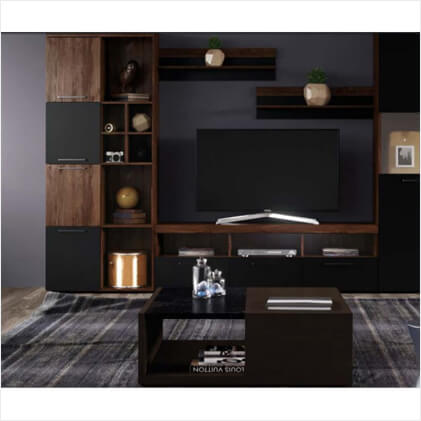

Гостинная Аляска БРВ
 мебельная стенка Аляска является очень современной. Дизайнеры фабрики «Блэк Ред Вайт» посчитали нужным сделать акцент именно на модерном стиле атрибутов мебели. Минималистическая манера не разочарует почитателей стилевых трендов и приверженцев новаторских течений. Представители фирмы BRW решили изготовить гостиную Alaska с помощью использования двух цветов – белого (корпус) и белого глянца (фасад).
Такое сочетание имеет непревзойденный внешний вид и впишется в ваши очаровательные апартаменты. В этой коллекции от Black Red White мы имеем две тумбы, две навесные витрины и панель с двумя полками. Функциональность такой гостиной трудно переоценить. Красивый внешний вид – не единое достоинство столь фактурной мебели. Достаточные габариты гостиной позволяют порадовать обладателя внушительным местом для хранения вещей.
Таким образом, здесь прекраснейшим образом расположиться не только телевизор, аудиосистема, но и приятные, милые сердцу вещицы.
Мебельная атрибутика системы Аляска представляет собой коллекцию компактных и лаконичных очертаний для потребителей, которые особой ценностью считают комфорт, внешнюю элегантность, практическую составляющую и задействование качественных материалов.
Аляска витрина станет хранилищем для верей покупателя. Тумба аляска безупречно воссоздаст уют в гостиной. БРВ ответственно относится к выпуску качественной мебели и предоставляет гарантию на её продолжительное использование.
Также особенной чертой коллекции Аляска является её элегантный и утонченный дизайн. Белоснежная гостиная в большинстве случаев смотрится выигрышно и облагораживает интерьер с помощью шарма. Еще она может зрительно расширить пространство.
Незатейливость форм мебели из этой системы побуждает наслаждаться ею и комфортно пользоваться в повседневных манипуляциях.
Аляска – новое дыхание в интерьере вашей гостиной.